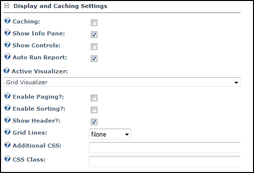

Configuring Display and Caching Settings
How to configure the Display and Caching Settings on the Reports module. Note: The Data Source Settings for this module must first be configured by the Host to display any data.
-
- Select the Report Settings tab.
- Go to the Display and Caching Settings section.
- At Caching, select from the following options:
- Mark
 the check box to enable data caching. If checked you can enter the amount of time to cache the data for, in minutes. Note: the following warning will also be displayed: " Warning! Enabling Caching when using parameters is a security and privacy risk. See the Reports Module documentation for details ".
the check box to enable data caching. If checked you can enter the amount of time to cache the data for, in minutes. Note: the following warning will also be displayed: " Warning! Enabling Caching when using parameters is a security and privacy risk. See the Reports Module documentation for details ". - Unmark
 the check box to disable data caching.
the check box to disable data caching.
- At Show Info Pane, select from the following options:
- Mark the check box to display the Info Pane on the view page for the module. The Info Pane displays the title and description of the Report for users.
- Unmark the check box to hide the Info pane.
- At Show Controls, select from the following options:
- Mark the check box to display the Run Report and Hide Report Result links on the module.
- Unmark the check box to hide the Run Report and Hide Report Result links on the module.
- At Auto Run Report, select from the following options:
- Mark the check box to automatically run the report when a user views the page. Note: By default, a report is automatically run when a user views the module. However, many reports can be time-consuming and resource-intensive. In this case, the Auto Run Report setting can be displayed. However, in order to allow users to run the report the Show Controls setting must be enabled. Note: The module does not, in the current version, automatically enable this setting.
- Unmark the check box to manually run a report.
- At Active Visualizer, select one of the available visualizers. By default, there are three visualizers supplied with the Reports module: the Grid Visualizer, the HTML Template Visualizer and the XSL Transformation Visualizer. The default option of Grid Visualizer does not require any files to be uploaded, unlike the other two options. Once you have selected a Visualizer, a number of additional settings specific to the selected option are displayed. For more details see "Configuring the Chart Visualizer Settings", "Configuring the Grid Visualizer Settings", "Configuring the HTML Template Visualizer Settings", "Configuring the XSL Transformation Visualizer Settings" and "Configuring the Microsoft Report Viewer Visualizer Settings".

-
Click the Update button.